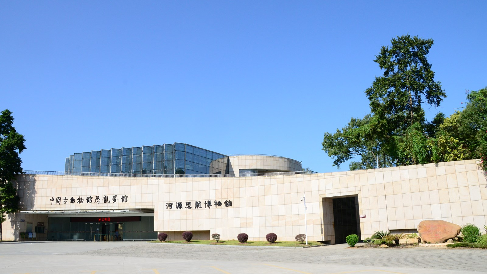
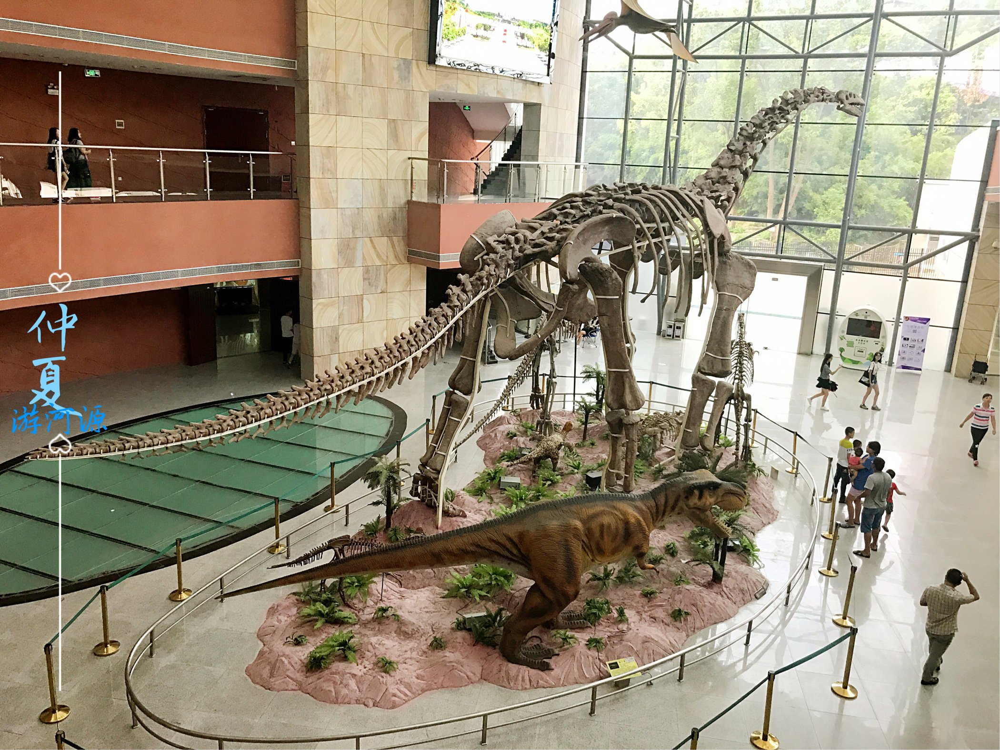

河源恐龙博物馆
河源恐龙博物馆于2010年11月建成对外开放，2013年与中科院古脊椎动物与古人类研究所合作共建、挂牌“中国古动物馆恐龙蛋馆”；2022年，挂牌成立华南首家恐龙科研机构——河源恐龙研究所。该馆占地面积3100平方米，建筑面积8300平方米，展览面积2800平方米，基本陈列以恐龙文化为主题，分《恐龙产房》《恐龙足迹》《恐龙故乡》三个展厅，主要展出河源市作为“中华恐龙之乡”的恐龙蛋、恐龙骨骼、恐龙足迹“三位一体”的丰富恐龙化石资源。其中，馆藏恐龙蛋化石2万多枚，数量居世界第一，荣获“吉尼斯世界纪录”，这些恐龙蛋种类丰富，形状各异，规格不一，极具科研与科普价值。馆藏窃蛋龙类黄氏河源龙、鹦鹉嘴龙、霸王龙类牙齿、大型蜥脚类恐龙椎体、蜥脚类恐龙肋骨和肱骨、鸟脚类恐龙趾骨等20多具恐龙骨骼化石。其中黄氏河源龙是南方发现窃蛋龙类的新属新种，是研究鸟类起源的一项重要佐证。此外，馆藏有南雄龟、菊石、新生代哺乳类动物牙齿、三叶虫等古生物化石。这些化石种类丰富，包含了不同时期、不同种类，是研究地球演变和古地理、古气候、古生物的宝贵资源。
河源市博物馆（河源恐龙文博园）作为河源市重要的文化旅游休闲景点和城市名片，是展示河源恐龙文化和历史文化、客家文化的重要窗口，年接待游客50万人次以上，是中国古生物学会全国科普教育基地、广东省科普教育基地、广东省青少年科技教育基地、广东省人文社会科学普及基地、河源市爱国主义教育基地等。